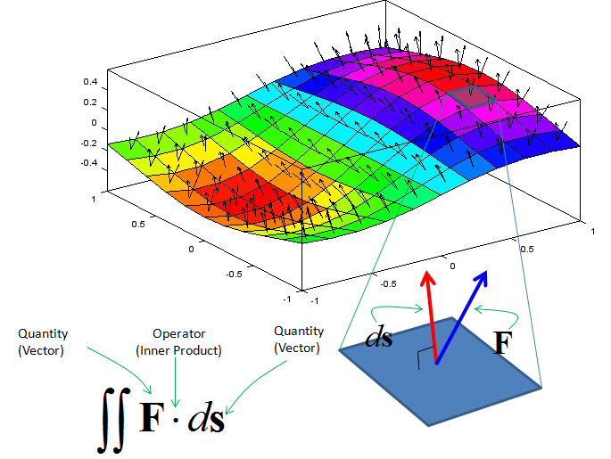
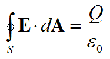
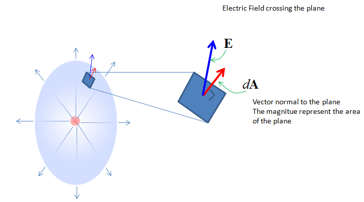

|
Calculus - Surface Integral Home : www.sharetechnote.com |
|
If you are new to the concept of Integration, I would suggest you to read the "Integration" page first.
As you may guess from the word itself, surface integral is a type of integraion taken over a surface. There can be many different operations over a surface. One example is as shown below. In this example, you see two vectors in each segments of the surface. one of the vector is normal to each surface segment(This vector is called 'normal vector'). The other vector is an arbitrary angle to the normal vector . Now I want to take the inner product of each red vector and blue vector and sum them all. This operation can be represented in a mathematical form as shown below. The mathematical operation is exactly same as the one shown in previous example. The only differences is that this operation goes along the surface. This kind of integration is called "Surface Integral".

Examples
One of the most common example of surface integral is Gauss Law of electric field which is expressed as shown below. (This is one component of Maxwell equations in electromagnetic theory).

Meaning of the left hand part of the equation (Integration Part) is as shown below. Suppose that you have a closed surface (like a sphere) and put a charge inside of the closed surface. Then the electric field line goes out of the charge (if the charge is positive) and penerate out of the closed surface. If you take a small segment (rectangular plane) of the surface, you will see the field line going through the surface with a certain angle to the plane. The angle between the field line and the surface is defined by the inner product of the normal vector and the field line. If you take the inner product of the two vectors of each segnment accorss the whole surface, it give you the value of the left hand side of the equation.

|